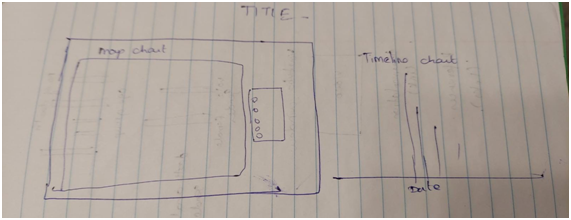

The purpose of the assignment was to recreate Dr. John Snow's cholera outbreak map as an interactive visualization using JavaScript and the Data Driven Documents (D3).
To recreate John Snow’s outbreak map using D3 JavaScript.
First, I have gone through the deliverables of my project and summarized the requirements.
Based on the requirements I started to design my page.
I have used all the datasets which are given for my project by the instructor. I have used different colors
in the graph to differentiate the attributes. Black denotes male, orange is female, green is workhouse and
pink is for Brewery. By moving the cursor to the black or orange dots on the map you can see the age group
of the victim.
I have developed a timeline chart with the given dataset. From the timeline chart, we can see the epidemic
has reached its peak on September 1st and afterwards it started reducing gradually.
I have developed additional charts, age-based death chart and gender-based death chart. Age based death chart shows the age groups and number of deaths between the age groups. By moving the cursor over to the chart, you can see the number of deaths in the age groups. Also, I have shown the total number of deaths by gender. I have used two colors to differentiate male and female. I found that there is no significant difference in death rate between male and female.
According to US census data from 1850, percentage of people in each age group in general during that time were 0-10: 28%, 11-20: 25%, 21-40: 30%, 41-60: 13%, 61-80: 4%, > 80: 1%. Here we assume the same for London. The largest number of victims were the older people aged greater than 80. The second largest were the kids in age range 0-10. Also, the disease was not related to gender as the number of males to the number of female victims was relatively insignificant.
To know more about the cholera outbreak, click on the link below
https://en.wikipedia.org/wiki/1854_Broad_Street_cholera_outbreak